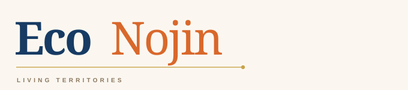
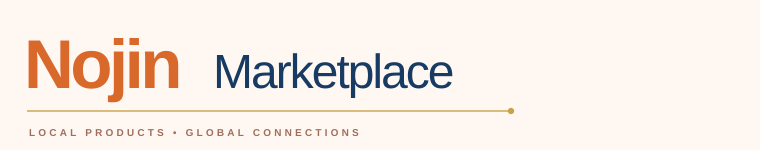

Eco Nojin
Territory · Nature · Living Systems

ترکیبی از علم، طبیعت، فناوری و اقتصاد سرزمینی؛ با زبانی گرم، روشن، معاصر و بینالمللی. این نسخه برای ارزیابی بصری و انتخاب جهت طراحی تهیه شده است.
نام برند بهعنوان عنصر اصلی هویت؛ بدون نماد تصویری مستقل.
Territory · Nature · Living Systems

Science · Modelling · Intelligence
Trade · Local Products · Global Connections

سه شخصیت مستقل در یک خانواده بصری مشترک.
اصیل، طبیعی، بینالمللی و سرزمینمحور. رنگهای گرم در کنار آبی سیر و طلایی.
علمی، دقیق، مهندسی و آیندهنگر. رنگهای آبی و فیروزهای با جزئیات طلایی.
زنده، اجتماعی، تجاری و صمیمی. نارنجی و گلبهی در کنار آبی سیر.
رنگهای اصلی، مکمل و تأکیدی در زمینههای روشن.
#173B63
#D9682B
#C9A34A
#F2B7A0
#E9957D
#75C8C0
#EAF2F8
#FBF7F0
انتخاب فونت بر اساس شخصیت، خوانایی و کاربرد.
برای تیترهای شاخص و هویت Editorial برند Eco Nojin.
برای HyDroMA، تیترها و ساختارهای رابط کاربری.
برای تجربه تجاری، بازارگاه و ارتباط با کاربران.
برای تیترهای فارسی و بخشهای شاخص.
برای متن عمومی، فرمها و رابط کاربری فارسی.
برای دادهها، شناسهها، کدها و اطلاعات فنی.
خطوط ظریف، نقاط طلایی، ریتم هندسی و فضای خالی.
خطوط و نقاط طلایی باید در نقش عناصر هدایتکننده و تأکیدی استفاده شوند؛ نه تزئینات پراکنده و بیهدف.
بررسی کاربرد رنگ و کنتراست در اجزای واقعی محصول.
برچسبها برای دستهبندی، وضعیت و معرفی ویژگیها.
نمونه نمایشی شاخص؛ فاقد داده عملیاتی واقعی.
DEMO DATA